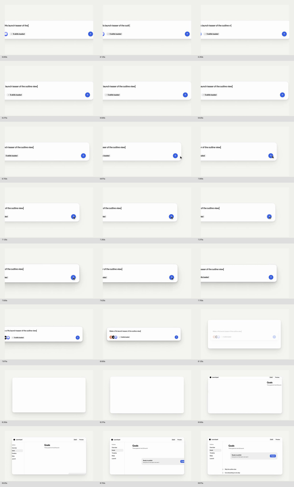
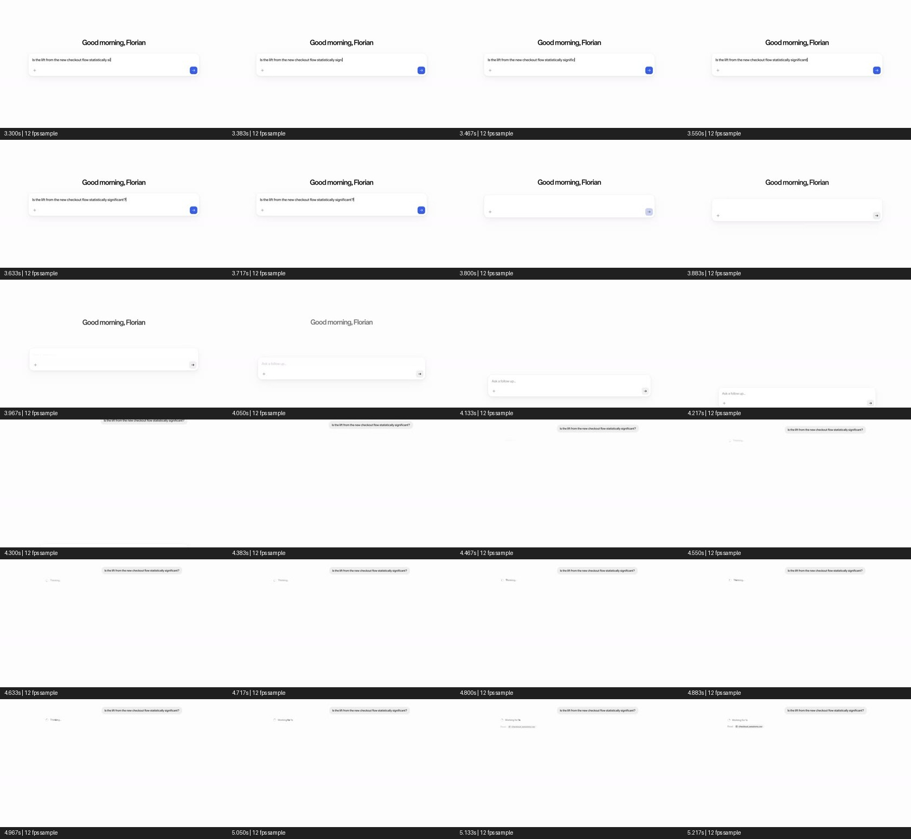
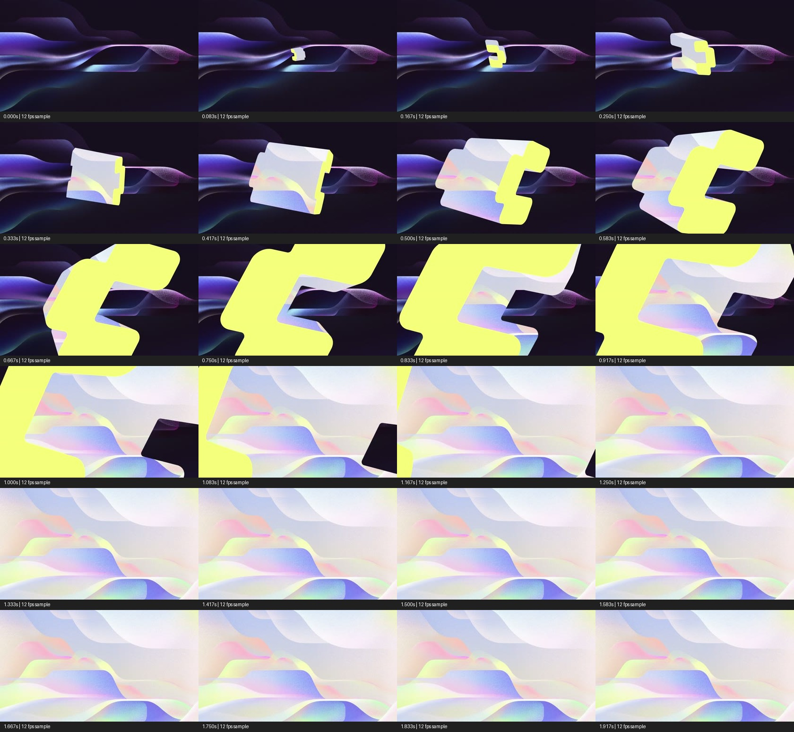
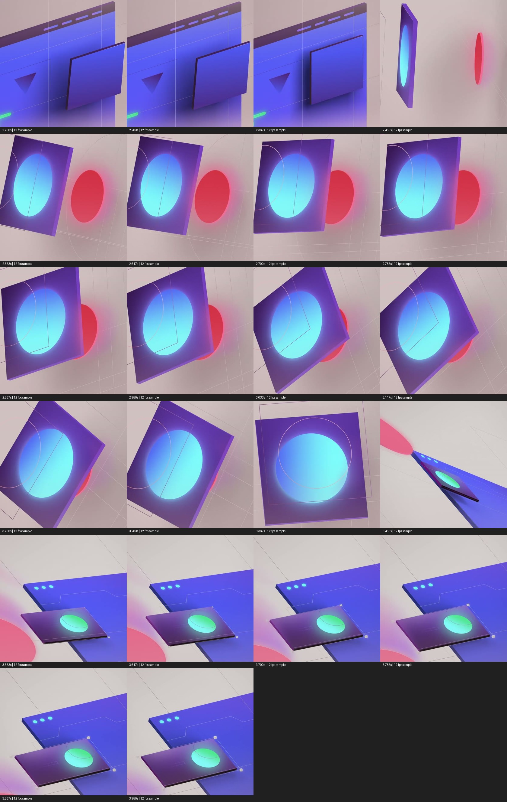
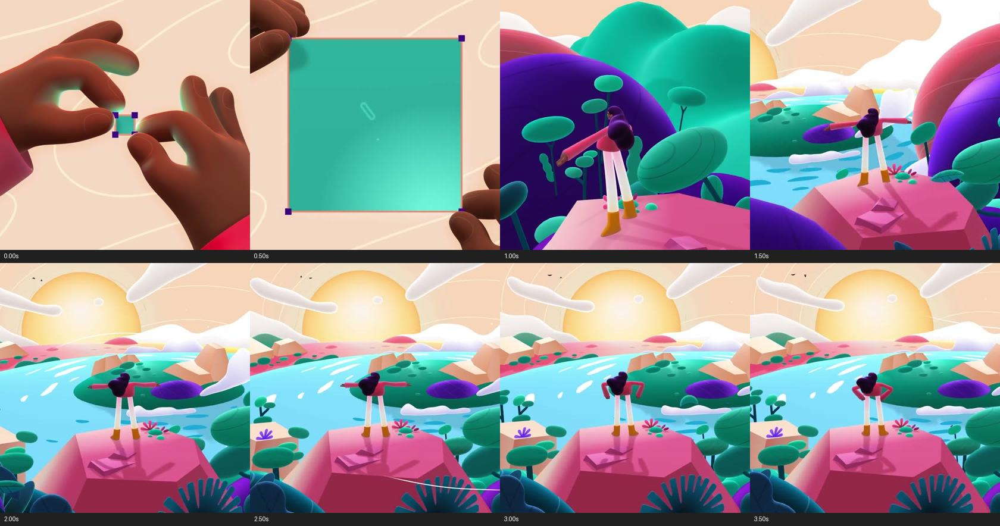
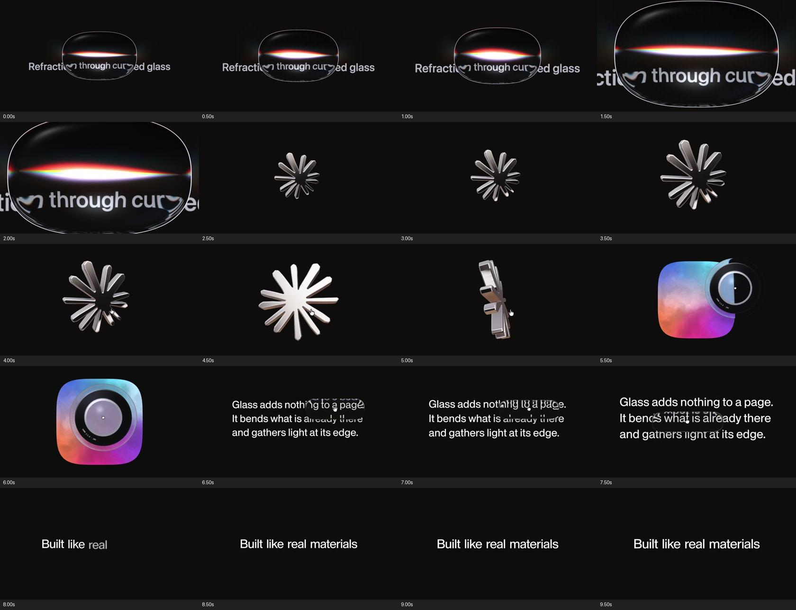

Nils 原片原始项目 ↗
交互 → 容器 → 下一镜
留意对象身份一直延续，以及动作前后的反馈与停顿
展开连续帧证据

用案例说明为什么上一版显得死板，再把研究落到坤坤现有的首页、输入框、生成状态和节点上
研究交付 · 尚未制作新版成片新增下载 9 个文件，加上之前的 Nils 原片，共 10 个参考文件。官方短循环不冒充完整影片。点击时间按钮定位，支持慢放；同时只播放一个媒体
留意对象身份一直延续，以及动作前后的反馈与停顿

3.8 秒附近输入清空并下移，随后出现处理状态与结果；不是一个静态框里换文字

学习形状、方向与内部内容的接力；不用 Comfy 的配色、字形或 Logo

运动通过比例、遮挡和角度展示层次；2.45 秒附近有明显切换，不能误称全程无剪切变形

借鉴从编辑对象进入结果世界的逻辑；角色与手势不迁移到坤坤

坤坤现有 MeshGradient 和首页动画可成为镜头素材，但要与操作语义有关

Webflow 与 Spline 的完整 Vimeo 影片获取失败，以上是官方项目页的预览/过程文件。全部本地视频解码通过；我已看连续抽帧，未完成耳听审查，不能声称已经听懂原片的声音设计
上一版从原首页动画的 4.4 秒开始取帧v3/source/entry.jsx:77 · 4.4 + f/60*1.5
目标节点一直是 idle，再直接换成 completed，漏掉原有 running 的 MeshGradient 与加载状态ImageNode.tsx:238 · 真实生成中分支
输入与节点段持续渲染顶栏；重做时只取操作需要的真实局部 UI
按时间索引换图，没有对象接力；改成主图与配图有前后层次的连续编排
停止沿用旧版合成音轨；先试听授权采样，再根据事件剪辑和混音
用一个作品串联产品能力；下一轮先检验 8–10 秒「输入 → 点击 → 原有生成状态 → 结果接管画面」。已认可的设计规范保留，新增空间运动用 GSAP 编排
从出生到展开保留完整关系
选定主图接到下一镜推近 → 稳定输入 → 移向生成
模型标识随选择器出现点击 → loading → MeshGradient
同一图像区域揭示结果拉回关系 → 选中 → 连线
由路径引导视线有主次的层叠与错位运动
主图接到品牌收尾首页动效重新融入镜头，不整段照搬，也不截掉出生阶段。操作特写无顶部导航。作品先做出镜白名单，排除其他品牌海报与无关广告文案。以上是待制作的编排方案，尚未证明成片效果
Kenney Interface Sounds · 100 个 OGG 已下载 · 包内 CC0 许可 · 下列 12 个按事件名称初筛，尚未听审选定。素材来自外部音库，不是上一版程序合成音
这套库偏界面反馈。键盘实录与空气转场另查 Mixkit Keyboard / Transition，已找到候选，当前访问受限尚未下载。备选：Freesound、Pixabay、Sonniss GDC
报告包含 18 个来源条目、实际阅读范围、逐段观察、免费音效边界、镜头草案和验收条件。参考作者的方法、我的画面判断和新编排建议分开记录
打开完整研究报告 查看媒体验证清单